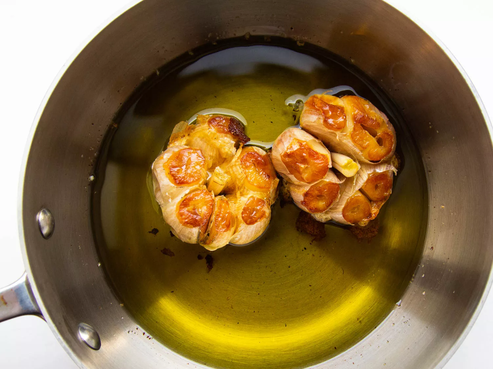

Oil Roasted Garlic Recipie:

Back
Ingredients
- 2 heads garlic (about 3 1/2 ounces; 100g total), outer papery skins removed and top 1/2-inch of head cut off and discarded
- Extra-virgin olive oil or neutral vegetable oil such as canola or grape seed, as needed
- Kosher salt and freshly ground black pepper
Directions
- Adjust oven rack to middle position and preheat oven to 375°F (190°C)
- Add 1 cup (240ml) oil to a small ovenproof saucepan (you can use all olive oil, all vegetable oil, or a blend of both). Place garlic heads, cut side down, in oil; cover and transfer to oven.
- Cook until cut side of garlic is golden brown, about 20 minutes.
Turn garlic heads cut side up, cover, and continue to cook until cloves are tender and can be easily pierced with a cake tester or paring knife, 20 to 25 minutes longer. Transfer saucepan to a heatproof surface and set aside to cool, uncovered, until garlic heads are cool enough to handle, 5 to 10 minutes. Squeeze cloves out of their skins, moving from root end toward cut end; discard skins. If there are pieces of papery skin left in the oil, strain through a fine-mesh strainer, using cheesecloth if necessary to remove any sediment. Roasted garlic cloves and roasted garlic oil can be used right away, or refrigerated in airtight containers for up to 1 week.